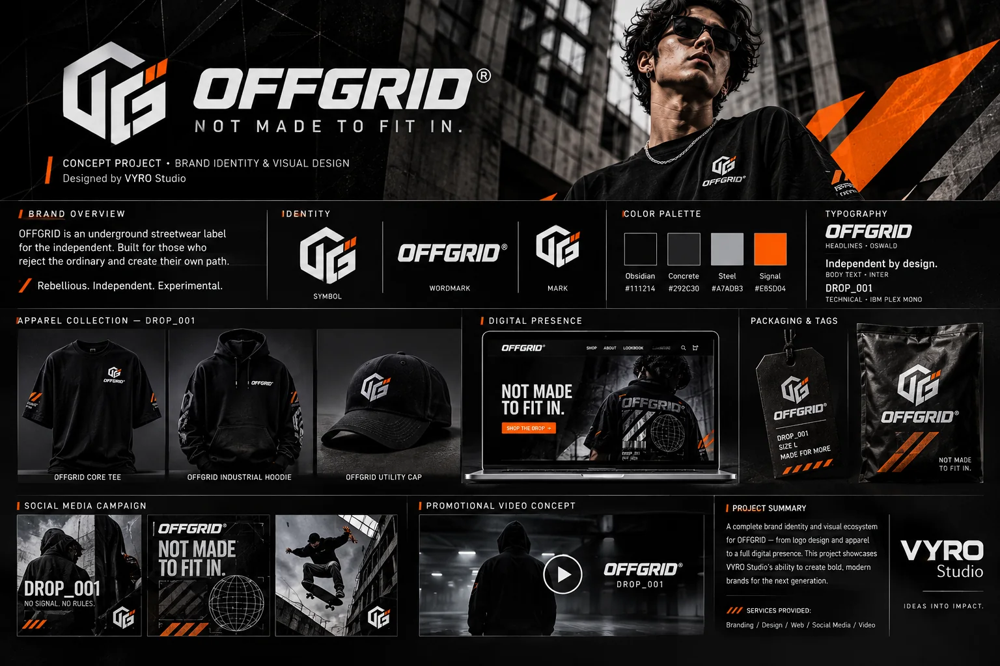
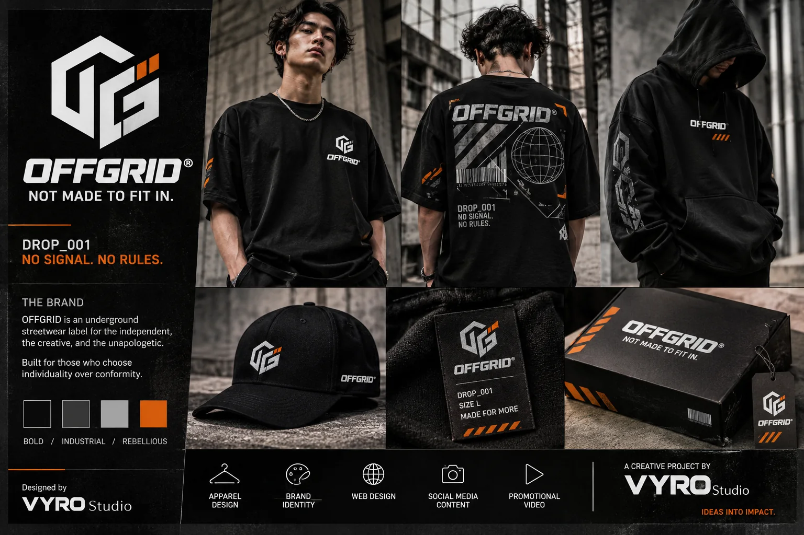

Industrial Hoodie
Heavy visual placement with orange utility marks across the garment.
APPAREL CONCEPTSELF-INITIATED CONCEPT PROJECT STREETWEAR / VISUAL IDENTITY
NO. 001 — 004
NOT MADE
TO FIT IN.
An independent streetwear identity shaped by underground culture, industrial graphics and the instinct to move outside the expected.
INDEPENDENT BY DESIGN / EST. 2026

Built for those who make their own lane.
OFFGRID is a fictional streetwear label imagined for an audience drawn to underground music, urban culture and independent style. The creative direction pairs stark typography and technical graphics with a restrained industrial palette.
The goal: a flexible identity that can move across garments, packaging, social content and a digital storefront without losing its edge.
A SELF-INITIATED DEMONSTRATION PROJECT. OFFGRID IS NOT A REAL CLIENT, COMMISSIONED BRAND OR OPERATING STORE.

The identity is deliberately direct: a hard-edged monogram, condensed wordmark and a single hit of signal orange. Industrial without becoming costume.
 IDENTITY BOARD / 001—A
IDENTITY BOARD / 001—A#111214#292C30#A7ADB3#E85D04Condensed display. Clean supporting sans. Technical mono for garment codes, labels and product information. The OG symbol and orange slash act as repeatable brand signatures.
COLLECTION / 001
A first collection translates the visual language into wearable graphics and everyday objects. Utility details, oversized placements and a reduced palette keep the system coherent.

Oversized black tee with chest mark, technical back graphic and sleeve details.
Heavy visual placement with orange utility marks across the garment.
APPAREL CONCEPTA reduced accessory application using the OG symbol as its primary mark.
ACCESSORY CONCEPTFrom the first impression to the details in-hand, each application carries the same visual codes.
PRODUCT IMAGES ARE AI-ASSISTED VISUAL MOCKUPS FOR CONCEPT PRESENTATION ONLY. THEY DO NOT REPRESENT MANUFACTURED INVENTORY, VERIFIED PRODUCTION SPECIFICATIONS, A FUNCTIONING ECOMMERCE WEBSITE OR A COMPLETED VIDEO ADVERTISEMENT.